Kepuasan Pengguna
Nilai layanan kami
Beri nilai →Perpustakaan Fakultas Adab dan Humaniora hadir sebagai pusat rujukan bagi dunia sastra, bahasa, juga sejarah dan kebudayaan manusia. Sebuah ruang bertumbuh, berpikir, dan berdiskusi untuk merawat nilai-nilai peradaban sekaligus menjelajahi kedalaman ilmu pengetahuan.
Layanan perpustakaan
Nilai layanan kami
Beri nilai →Catat kunjungan Anda
Lihat layanan →Tanya pustakawan
Hubungi kami →Panduan penelusuran
Lihat panduan →Temukan bacaan
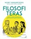
Hendry Manampiring
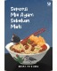
Brian Khrisna
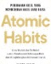
James Clear
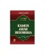
Ahmad Najieh
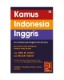
John M. Echols dan Hassan Hasadily
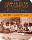
H. M. Ridwan Lubis
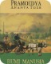
Pramoedya Ananta Toer
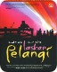
Andrea Hirata
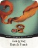
Ahmad Tohari
Koleksi pilihan
Mulai dari kisah fiksi hingga gagasan yang mengubah cara pandang.
4 buku ditemukan 1 buku ditemukan
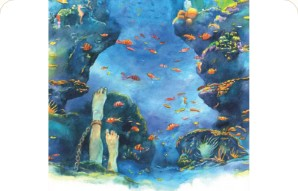
Leila S. Chudori
Novel tentang para aktivis mahasiswa yang hilang pada akhir masa Orde Baru dan keluarga yang ditinggalkan.
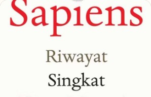
Yuval Noah Harari
Riwayat singkat umat manusia, dari revolusi kognitif hingga dunia modern.
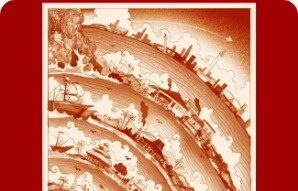
M. C. Ricklefs
Rujukan sejarah Indonesia sejak kedatangan Islam hingga masa kini.
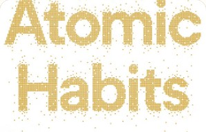
James Clear
Panduan membangun kebiasaan baik dan menghentikan kebiasaan buruk lewat perubahan kecil.
Perpustakaan dalam angka
1.250
480
Informasi terkini
Ikuti kabar terbaru tentang seminar, workshop, dan kegiatan edukatif yang berlangsung di ruang baca kami.
Belajar menemukan sumber tepercaya dan mengolah referensi untuk mendukung kegiatan akademik.
Baca selengkapnyaSesi praktik untuk membangun kebiasaan membaca efektif bersama pustakawan dan peserta.
Baca selengkapnyaRuang bertukar gagasan bagi pembaca untuk menikmati karya dan memperluas perspektif.
Baca selengkapnya